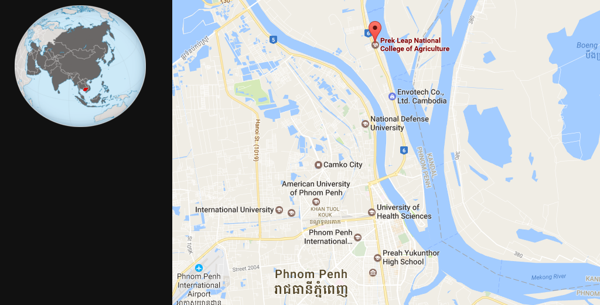

b>i research group at a glance
Brad Collins
Created: 2017-02-01 Wed 10:38
b>i research group I
The b>i research group is a multi-disciplinary research group that combines agriculture, biology, chemistry, engineering, architecture, and information science that will help mankind make the transition from a single global centralized civilization to a decentralized and distributed civilization that can meet the challenges that will face our species and out planet over the comming decades.
b>i research group II
For this to happen, technology and solutions must scale. So all research and technology developed by b>i must:
- Work at very small and very large scales. We have forgotten how to do many industrial processes at small scales, let alone at cost-effective small scales.
- Whenever possible be modular, built on open designs, and work in a wide range of physical, social and economic contexts.
- Contribute to improve the lives of people living in the bioregions of the Lower Mekong River Subregion.
It From Bit
Figure 1: John Archibald Wheeler (1911-2008)
It From Bit (cont)
The thesis it from bit: every it, every particle, every field of force, even the spacetime continuum itself, derives… from… answers to yes and no questions, binary choices, bits….. all things physical… must in the end submit to an information-theoretic description.
– John Archibald Wheeler (1911-2008)
Research Agenda
Location

Figure 2: Prek Leap National College of Agriculture
Prek Leap National College of Agriculture
Organization
Studyhall: Lifelong Learning
The Labs
Soft Lab
Hard Lab
Wet Lab
Planned Facilities
Visualization Center
Expert Houses
Data Center & NOC
Join Us!
- Join the Sabbatical Program
- Become a Mentor
- Become an Intern
- Become an Apprentice
- Become a Member Organization
- Donate
- Books
- Amazon Wishlist
- (no term)
- Equipment
- (no term)
- Construction Supplies
- (no term)
- Money
Toolchain
This presentation was made with:
- emacs
- http://gnu.org/software/emacs/
- orgmode
- http://orgmode.org
- reveal.js
- https://github.com/hakimel/reveal.js


Thank You
- brad@chenla.la
- @deerpig
- github
- http://github.com/chenla/
- web
- http://chenla.la/b-i/
- irc
- //irc.freenode.org/chenla